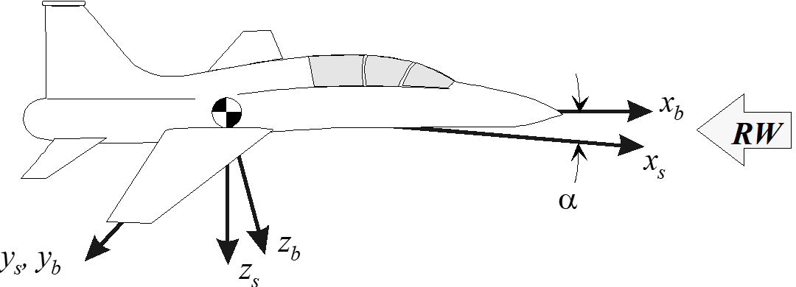
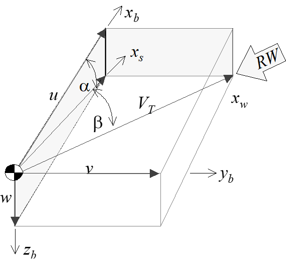
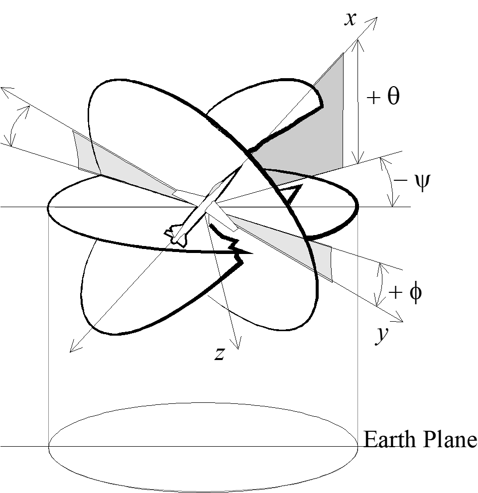

6 Axis Systems and Transformations
6.1 Earth Axis Systems
(Reference 6.6.1)
Both fixed-earth and moving-earth axis systems keep constant orientation with respect to the Earth. The \(z\) -axis point towards the center of the Earth. The origin of a fixed-earth system does not move relative to the Earth (such as a ground radar site). The origin of a moving-earth system does not move relative to its host (such as an aircraft inertial reference unit).
6.2 Aircraft Axis Systems
(Reference 6.6.2)
6.2.1 Body Axis System
The body axis system, denoted by a subscript \(b\) , originates at the aircraft center of gravity. The positive direction of the \(x_b\) -axis is towards the front. The positive direction of the \(y_b\) -axis is towards the right wing tip, and the positive direction of the \(z_b\) -axis is towards the bottom of the aircraft.
6.2.2 Stability Axis System
The stability axis system is similar to the body axis system except that it is rotated about the \(y\) -axis through the angle of attack \(\alpha\) .

Forces, velocities or accelerations along the stability axes are related to the body axes as follows. \[\begin{align} x_b =& x_s \cos \alpha − z_s \sin \alpha \\ y_b =& y_s \\ z_b =& z_s \cos \alpha + x_s \sin \alpha \end{align}\]
For cases where the z axis is defined positive upward (typical for normal-axis accelerometers), we have the following. \[\begin{align} x_b =& x_s \cos \alpha + z_s \sin \alpha \\ z_b =& z_x \cos \alpha - x_s \sin \alpha \end{align}\]
6.2.3 Wind Axis System
The wind axis system is similar to the stability axis system except it is rotated about the \(z_s\) -axis through the angle of sideslip, \(\beta\) .
The term “wind” refers to the fact that the freestream relative wind approaches the aircraft directly along the \(x_w\) -axis. This dictates that the true airspeed also lies along the same axis.
Forces, velocities, or accelerations along the wind axes are related to the stability axes as follows \[\begin{align} x_s =&x_w \cos \beta - y_w \sin \beta \\ y_s =& y_w \cos \beta + x_w \sin \beta \\ z_s =& z_w \end{align}\]
The geometric relations between body, stability and wind axis velocities are defined and illustrated here. In general,
\[\begin{equation*} \sin \alpha = \frac{w}{V_T \cos \beta} \end{equation*}\] and
\[\begin{equation*} \sin \beta = \frac{V}{V_T}. \end{equation*}\]
If \(\beta\) is small, then \(\sin \alpha = w/V_T\) and \(\beta = V / V_T\) . If \(alpha\) is small, then \(\alpha = w/V_T\) .

Most aircraft sideslip vanes do not measure \(\beta\) directly. They measure the flanking angle, which is the projection of the relative wind into the aircraft’s \(x-y\) plane. The difference between these two angles increases with angle of attack. Ignoring upwash, boom bending, and body axis rate corrections, calculate true sideslip as a function of vane \(\alpha\) and \(\beta\) as follows:
\[\begin{equation*} \beta_{\mathrm{true}} = \tan^{-1} (an\beta_{\mathrm{vane}})). \end{equation*}\]
6.2.4 Wind-Body Axis Transformations
(Reference 6.6.1)
Combining the two previous transformations, we see that forces, velocities, or accelerations along the wind axes are related to the body axes as follows.
\[\begin{equation*} \begin{bmatrix} x_b \\ y_b \\ z_b \end{bmatrix} = \begin{bmatrix} \cos \alpha & 0 & -\sin \alpha \\ 0 & 1 & 0 \\ \sin \alpha & 0 & \cos \alpha \end{bmatrix} \begin{bmatrix} \cos \beta & -\sin \beta & 0 \\ \sin \beta & \cos \beta & 0 \\ 0 & 0 & 1 \end{bmatrix} \begin{bmatrix} x_w \\ y_w \\ z_w \end{bmatrix} \end{equation*}\]
After expansion, \[\begin{align} x_b =& \cos \alpha (x_w \cos \beta - y_w \sin \beta) - z_w \sin \alpha \\ y_b =& x_w \sin \beta + y_w \cos \beta \\ z_b =& \sin \alpha (x_w \cos \beta - y_w \cos \beta) + z_w \cos \alpha \end{align}\]
The inverse transform, converting from the body to the wind axis system is as follows.
\[\begin{equation*} \begin{bmatrix} x_w \\ y_w \\ z_w \end{bmatrix} = \begin{bmatrix} \cos \beta & \sin \beta & 0 \\ -\sin \beta & \cos \beta & 0 \\ 0 & 0 & 1 \end{bmatrix} \begin{bmatrix} \cos \alpha & 0 & \sin \alpha \\ 0 & 1 & 0 \\ -\sin \alpha & 0 & \cos \alpha \end{bmatrix} \begin{bmatrix} x_b \\ y_b \\ z_b \end{bmatrix} \end{equation*}\]
After expansion, \[\begin{align} x_w =& \cos \beta (x_b \cos \alpha + z_b \sin \alpha) + y_b \sin \beta \\ y_w =& -\sin \beta(x_b \cos \alpha + z_b \sin \alpha) + y_b \cos \beta \\ z_w =& -x_b \sin \alpha + z_b \cos \alpha \end{align}\]
Note that these equations apply to the sign convention with z+ down. If sign convention (and instrumentation calibration) use z+ upward, then the above equations become: \[\begin{align} x_w =& \cos \beta (x_b \cos \alpha - z_b \sin \alpha) + y_b \sin \beta \\ y_w =& -\sin \beta(x_b \cos \alpha + z_b \sin \alpha) + y_b \cos \beta \\ z_w =& x_b \sin \alpha + z_b \cos \alpha \end{align}\]
6.2.5 Principle Axes
The principle axes are those about which the products of inertia are zero. They can be equated to the axis of “dumbells” which represent concentrated mass elements. Neglecting aerodynamic and gyroscopic effects, an aircraft rotating about one of its principle axes will not tend to cross-couple into motion about any other axis.
6.3 Euler Angles
(Reference 6.6.1)
Euler angles are expressed as yaw, pitch, and roll. The sequence–first yaw, then pitch, then roll–must be maintained to arrive at the proper orientation angles. The Euler angles are defined as follows:
- Yaw Angle
- \(\psi\) - The angle between the projection of the vehicle \(x_b\) -axis onto the horizontal reference plane and some initial reference position of the Earth \(x\) -axis. Yaw angle equals the vehicle heading only if the initial reference is North.
- Pitch Angle
- \(\theta\) - The angle in the vertical plane between \(x_b\) and the horizon.
- Bank Angle
- \(\phi\) - The angle measured in the \(y-z\) plane of the body-axis system between the \(y\) -axis and the horizontal reference plane. Also known as the roll angle, it is a measure of the rotation about the \(x\) -axis.

6.4 Flight Path Angles
(Reference 6.6.3)
Just as the Euler angles define the attitude of the aircraft with respect to the Earth, three flight path angles describe the vehicle’s cg trajectory relative to the Earth, not the air mass.
- Flight path heading angle
- \(\sigma\) - This angle, also known as ground track heading, is the horizontal angle between some reference direction (usually North) and the projection of the velocity vector on the horizontal plane. Positive rotation is clockwise, from North to East.
- Flight path elevation angle
- \(\gamma\) - The vertical angle between the flightpath and the horizontal plane. Positive angle is above the horizon. During a descent, this is commonly referred to as glide path angle.
- Flight path bank angle
- \(\mu\) - The angle between the plane formed by the velocity vector and the lift vector and the vertical plane containing the velocity vector. Positive angle is clockwise about the velocity vector, looking forward.
The first two angles above are easily measured using ground-based radar, onboard GPS, or inertial reference systems. If only \(\alpha, \beta\) , andthe Euler angles are available, then we can calculate the flightpath angles, assuming zero wind, as follows. \[\begin{align} \gamma =& \arcsin [(\sin\theta \cos\alpha - \cos\theta \cos\phi \sin\alpha) \cos\beta - \cos\theta \sin\phi \sin\beta] \\ \sigma =& \psi + \arcsin \left[\frac{\cos\phi \sin\beta - \sin\phi \sin\alpha \cos\beta}{\cos\gamma} \right]\\ \mu =& \arcsin\left[ \frac{\cos\theta \sin\phi \cos\beta + (\sin\theta \cos\alpha -\cos\theta \cos\phi \sin\alpha)}{\cos\gamma} \right] \end{align}\]
Technically, the above equations describe the velocity vector, that is, the angles relative to the air mass. If the air mass is moving relative to the Earth, as is usually the case, the above equations do not describe the true flight path.
Ignorance of the difference between flight path and velocity vector angles can cause considerable confusion when analyzing data from different sources.
6.5 Axis System Transformations
(Reference 6.6.2)
Transformation matrix for converting forces, velocities or accelerations from earth axis system, also known as inertial, \([X, Y, Z]\) , to body coordinates \([x, y, z]\) .
\[\begin{equation*} \begin{bmatrix} x_b \\ y_b \\ z_b \end{bmatrix} = \begin{bmatrix} 1 & 0 & 0 \\ 0 & \cos\phi & \sin\phi \\ 0 & -\sin\phi & \cos\phi \end{bmatrix} \begin{bmatrix} \cos\theta & 0 & -\sin\theta \\ 0 & 1 & 0 \\ \sin\theta & 0 & \cos\theta \end{bmatrix} \begin{bmatrix} \cos\psi & \sin\psi & 0 \\ -\sin\psi & \cos\psi & 0 \\ 0 & 0 & 1 \end{bmatrix} \begin{bmatrix} X \\ Y \\ Z \end{bmatrix} \end{equation*}\]
This yields
\[\begin{equation*} \begin{bmatrix} x_b \\ y_b \\ z_b \end{bmatrix} = \begin{bmatrix} \cos\theta \cos\psi & \cos\theta \sin\psi & -\sin\theta \\ -\cos\theta \sin\psi + \sin\phi \sin\theta \cos\psi & \cos\phi \cos\psi + \sin\phi \sin\theta \sin\psi & \sin\phi \cos\theta \\ \sin\phi \sin\psi + \cos\phi \sin\theta \cos\psi & -\sin\phi \cos\psi + \cos\phi \sin\theta \sin\psi & \cos\phi \cos\theta \end{bmatrix} \begin{bmatrix} X \\ Y \\ Z \end{bmatrix} \end{equation*}\]
The inverse of the above transform matrix converts from the body axis to the inertial axis coordinate system.
\[\begin{equation*} \begin{bmatrix} X \\ Y \\ Z \end{bmatrix} = \begin{bmatrix} \cos\theta \cos\psi & - \cos\phi \sin\psi + \sin\phi \sin\theta \cos\psi & \sin\phi \sin\psi + \cos\phi \sin\theta \cos\psi \\ \cos\theta \sin\psi & \cos\phi \cos\psi + \sin\phi \sin\theta \sin\psi & -\sin\phi \cos\psi + \cos\phi \sin\theta \sin\psi \\ -\sin\theta & \sin\phi \cos\theta & \cos\phi \cos\theta \end{bmatrix} \begin{bmatrix} x_b \\ y_b \\ z_b \end{bmatrix} \end{equation*}\]
6.5.1 Acceleration Transformations
First, we convert body-axis angular rates and linear accelerations into total accelerations along the body axes. \[\begin{align} a_x =& \dot{u} + qw - rv \\ a_y =& \dot{v} + ru -pw \\ a_z =& \dot{w} + pv - qu \end{align}\]
We also convert the location and rates of mass elements, \(m_1\) , into specific angular momentum. \[\begin{align} \frac{H}{m_1} =& \, \bar{r_1} \times [\bar{\omega} \times \bar{r_1}] \\ \left[ \frac{H}{m_1} \right]\hat{i} =& \, p(y^2 + z^2) - q(xy) - r(xz)\\ \left[ \frac{H}{m_1} \right]\hat{j} =& \, q(x^2+z^2) - r(yz) - p(xy)\\ \left[ \frac{H}{m_1} \right] \hat{k} =& \, r(x^2+y^2) - p(xz) - q(yz) \end{align}\]
6.5.2 Transformations between body axis rates and Euler angle rates
\[\begin{align} p =& \, \dot{\phi} -\dot{\psi} \sin\theta\\ q =& \, \dot{\theta} \cos\phi + \dot{\psi} \cos{\theta} \sin{\phi}\\ r =& \, \dot{\psi} \cos\theta \cos\phi - \dot{\theta} \sin\phi\\ \dot{\phi} =& \, p + \tan\theta(q \sin\phi + r\cos\phi) \\ \dot{\theta}=& \, q \cos\phi - r\sin\phi\\ \dot{\psi} =& \frac{q \sin\phi + r \cos\phi}{\cos\theta} \, \end{align}\]
6.5.3 Transformations from aerodynamic angles to aircraft stability axis angular rates
Subscripts \(b, s,\) and \(w\) denote the body, stability and wind axis systems. \[\begin{align} p_s =& p_b \cos\alpha + r_b \sin\alpha\, \\ q_s =& \, q_b\\ r_s =& \, r_b \cos\alpha - p_b \sin\alpha \end{align}\]
6.5.4 Transformations from aerodynamic angles to the aircraft wind axis angular rates
Subscripts \(b, s,\) and \(w\) denote the body, stability and wind axis systems. \[\begin{align} p_w =& p_s \cos\beta + q_s \sin\beta\, \\ q_w =& \, q_s \cos\beta - p_s\sin\beta\\ r_w =& \, r_s \end{align}\]
6.5.5 Transformations from Euler angles to aircraft body axis angular rates
(Reference 6.6.3) \[\begin{align} \dot{p_b} =& \, \ddot{\phi} - \ddot{\psi}\sin\theta - \dot{\psi} \, \dot{\theta} \cos\theta \\ \dot{q_b} =& \, \ddot{\theta} \cos\phi - \dot{\theta} \, \dot{\phi} \sin{\phi} + \ddot{\phi} \cos\theta \sin\phi - \dot{\psi} \, \dot{\theta} \sin\theta \sin\phi + \dot{\psi} \, \dot{phi} \cos\theta \cos\phi \\ \dot{r_b} =& \, \ddot{\psi} \cos\theta \cos\phi - \dot{\psi} \, \dot{\theta} \sin\theta \cos\phi - \dot{\psi} \, \dot{\theta} \cos\theta \sin\phi - \ddot{\theta} \sin\phi - \dot{\theta} \, \dot{\phi} \cos\phi \end{align}\]
6.5.6 Transformations from aerodynamic angles and body axis angular rates to aircraft stability axis angular rates
\[\begin{align} \dot{p_s} =& \, \dot{p_b} \cos\alpha + \dot{\alpha} \, p_b \sin\alpha + \dot{r_b}\sin\alpha + \dot{\alpha} \, r_b \cos\alpha \\ \dot{q_s} =& \, \dot{q_b} \\ \dot{r_s} =& \, \dot{r_b} \cos\alpha - \dot{\alpha} \, r_b \sin\alpha - \dot{p_b}\sin\alpha - \dot{\alpha} \, p_b \cos\alpha \end{align}\]
6.5.7 Transformations from aerodynamic angles and aircraft stability axis to aircraft wind axis angular rates
\[\begin{align} \dot{p_w} =& \, \dot{p_b} \cos\beta + \dot{\beta} \, p_s \sin\beta + \dot{q_s}\sin\beta + \dot{\beta} \, q_s \cos\beta \\ \dot{q_w} =& \, \dot{q_s} \cos\beta - \dot{\beta} \, q_s \sin\beta - \dot{p_s} \sin\beta - \dot{\beta} \, p_s \cos\beta\\ \dot{r_w} =& \, \dot{r_s} \end{align}\]
6.6 References
| 6.6.1 | Lawless, Alan R., Math and Physics for Flight Testers “Chapter 7, Axis Systems and Transformations”, National Test Pilot School, Mojave CA, 1998. |
| 6.6.2 | Anon., Aircraft Flying Qualities, Chapter 4, Equations of Motion, USAF TestPilot School notes, AFFTC Edwards AFB CA, March 1991. |
| 6.6.3 | Kalviste, Juri, Flight Dynamics Reference Handbook, Northrop Corp. Aircraft Division, April 1988. |